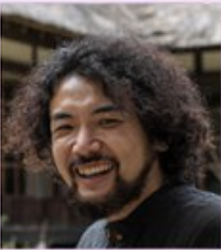
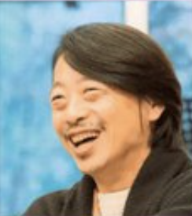

SYMPOSIUM REPORT
発言集 〜 タウマゼインな人々 2026/2/11 〜
KISSATEN / NURSE
岡田 亜理寿
砂漠
喫茶店
手放し
顔の見える関係
ブリコラージュ
「今の自分、どうにか変えたい」って思って、突然、砂漠に行ったんですよ
あ、私、安定した仕事とかお金だけで生きてたんじゃない、って気づいたんですよね
世界って結局、“思い合う関係”が増えたら変わるんじゃないかって
手に“プツプツ”来るやろ。やってみると、本当に手で分かるんです
知識を、優しく“喜ばせる方向”に使えるようになると、世界もっと面白くなりそう
PHYSICS / NEUTRINO
久保田 しおん
ニュートリノ
死からの逃避
フルート
整合性の美
命のバトン
人類が何世代もかけて作ってきた長い交響曲に、自分も一瞬だけ参加してる感じ
フルートのために物理をやりたくなったのが入口でした
「死ぬ体」に対して「死なない意味」を探すのが文化活動
応用だけ続くと、知識を生み出す“畑”が痩せていく。一次産業が枯れるのと同じ
「自分の楽しそうな姿を見て!」から入って、のちのちタウマゼインに結びついていく

PHILOSOPHY / NPO
渡邊 和樹
空海
寺子屋
プロセスの反復
サードプレイス
秘密の出会い
モデルの再現から、プロセスの反復へ
僕は「出会ってしまった」が大きいです
言葉で組み立てる哲学と、身体を通した実践が、ちゃんと一つに繋がっている
アートって、自分のコアにあるものを外に差し出す、投げ出す、みたいなこと
「この世界は、秘密の出会いに開かれている」って信じることはできる
STARTUP / CEO
風間 健人
越境
境界の相対化
通過点としての死
自分への許し
CEOの土壌
え、機会って、場所でこんなに違うの? っていうのが、最初の大きい発見でした
境界を越えるたびに見えるものが増えて、それが原動力になってきた
浄土真宗でよく言われる言葉の一つに、「今、いのちがあなたを生きている」
タウマゼインが生まれる条件は、自分に許しを与えられた瞬間なのかな
CEOなんだから、とりあえず長い土壌に行け、と言われたりして

MODERATOR / DESIGN
岩波 直樹
創造の4象限
感覚派経営
正しさの限界
驚きの一歩
認識の外側
湧き出る思いに身を投じて突き進む人が、世の中の空気をちょっとずつ変えていく
「花火上げようぜ」みたいな、感覚の一言で前に進むことがある
正しさが先行しすぎると、合理的には進むけど、どんどんつまんなくなる
アート・サイエンス・エンジニアリング・デザイン。この4つを回すのが創造なんだ
人生の時間としては、説明なしで「バーン」って来る場に、空いてたら行くのも大事